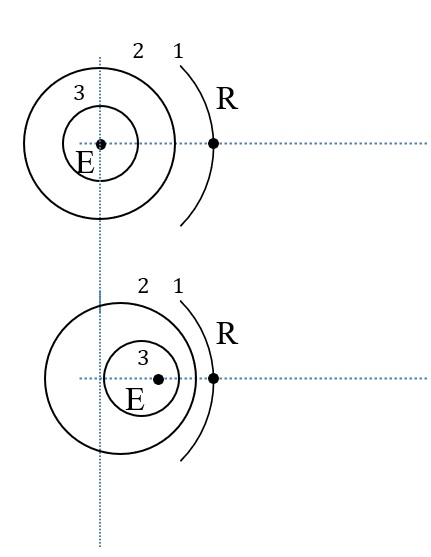

Lycée Taiarapu Nui
Terminale Générale
Spécialité Physique – Chimie
2020-2021
Terminale Générale
Spécialité Physique – Chimie
2020-2021
C8. Propagation des ondes
Activité 1
Document 1 - Intensité sonore
Une source sonore placée en O émet un son d’une puissance sonore
$P=10,0 W$ dans toutes les directions. Un point M est situé à une
distance R de O. L’aire de sphère de centre O et de rayon R est $A=4 \pi R^2$.
1) Calculer la puissance par mètre carré reçu au point M lorsque $R=1,0\ m$ et lorsque $R=2,0\ m$.
Comparer.
Activité 2
Document 2 - Le niveau sonore
L’intensité sonore audible sensible à l’oreille humaine s’étend sur une plage
très large (de $10^{-12}$ à $1\ W.m^{-2}$), on utilise une autre grandeur appelée niveau sonore
dont la plage de valeurs est plus adaptée pour comparer différent son :
| $L=10\log \left(\dfrac{I}{I_0}\right) $ | $ L$ : niveau sonore en décibel (dB) $ I$ : intensité sonore en $W.m^{-2}$ $ I_0$ : intensité de référence (seuil audible) $ I_0=1,0×10^{-12}\ W.m^{-2}$ |
Document 3 - Logarithme décimal
La fonction logarithme décimal n’est pas défini
pour 0.
|
$log(1)=0$ $∀x∈R^*$, $log (x)=\dfrac{ln(x)}{ln(10)}$ $10^{log(x)} =x$ |
$∀\ a∈R^*$ et $∀\ b∈R^*$, $log(a×b)=log(a)+log(b)$ $log \left( \dfrac{a}{b} \right)=log(a)-log (b)$ |
Une source sonore produit un son d’intensité sonore $I=2,0×10^{-6}\ W.m^{-2}$.
2) Calculer le niveau sonore correspondant.
3) On place une deuxième source sonore identique à côté de la première source.
L’intensité sonore est maintenant le double. Calculer le niveau sonore des deux sources.
4) On mesure un niveau sonore de 76dB. Calculer l’intensité sonore de la source.
Document 4 – Atténuation
Lorsqu’un son passe à travers un obstacle ou lorsqu’on s’éloigne de la source, son
intensité diminue. Le niveau sonore passe de $L$ à $L’$. L’atténuation A est égale à $L-L’$.
5) Les intensités sonores correspondantes à $L$ et $L'$ sont respectivement $I$ et $I'$. Montrer que
l’atténuation peut se mettre sous la forme : $A=10\ log \left(\dfrac{I}{I'}\right) $.
6) Calculer l’atténuation pour $I'=0,1\ I$.
Attendus
Vous êtes capable :
Vous êtes capable :
# d’exploiter l’expression du niveau d’intensité sonore
# de définir l’atténuation comme étant la différence de deux niveaux d’intensité sonore.
# de définir l’atténuation comme étant la différence de deux niveaux d’intensité sonore.
Exercice 1
Un navire utilise un sonar pour cartographier le fond marin. Le signal émis en surface
avec une intensité de $0,7\ mW.m^{-2}$. Lorsqu’il atteint le fond, à $1700\ m$ de profondeur,
son intensité est de $0,6\ mW.m^{-2}$.
7) Calculer l’atténuation A correspondante en dB.
8) En déduire le coefficient linéaire d’atténuation α en $dB.m^{-1}$ de l’eau pour cette onde.
9) Calculer la distance au bout de laquelle une onde radar subit la même atténuation. Commenter.
Donnée : coefficient linéaire d’atténuation des ondes radar dans l’eau de mer :
$α=6\ dB.cm^{-1}$.
Exercice 2
Un home cinéma est composé de trois enceintes à l’avant et de deux à l’arrière. Un technicien
règle séparément les enceintes pour recevoir 70 dB dans la zone d’écoute. Puis il met les
cinq enceintes en marche simultanément.
Donnée : Seuil audible : $I_0=10^{-12}\ W.m^{-2}$ | Niveau d’intensité sonore
à risque : $85\ dB$.
10) Calculer l’intensité sonore dans la zone d’écoute lorsqu’une seule enceinte est en marche.
11) En déduire la puissance sonore P produite par une enceinte avant située à une
distance $d=3,0\ m$ de la zone d’écoute.
12) Calculer le niveau d’intensité sonore lorsque les cinq enceintes sont mises en marche en même temps.
13) Préciser si ce niveau d’intensité sonore présente un danger.
Activité 3
Document 3 - Description du phénomène

Pour simplifier la compréhension on choisit une source sonore E (émetteur) qui émet un « bip »
à intervalles de temps réguliers : toutes les T secondes. Les sons se propagent dans toutes les
directions comme une bulle qui grandit. Une personne R (le récepteur) située à une certaine
écoute les sons émis par E.
| Bip | 1 | 2 | 3 |
| Distance à parcourir | $d_1$ | $d_2 = d_1 $ | $d_3 = d_1$ |
| Date de réception | $t_1$ | $t_2$ | $t_3$ |
Cas où la distance est fixe entre l’émetteur E et le récepteur R est fixe.
| Bips 1 et 2 | Bips 2 et 3 | |
| Durée entre les bips | $t_2-t_1=T $ | $t_3-t_2=T $ |
R entend les bips à la même fréquence que l’émetteur.
Cas où la distance entre E et R diminue (par exemple E se rapproche de R).
| Bips 1 et 2 | Bips 2 et 3 | |
| Durée entre les bips | $t_2 -t_1 < T $ | $t_3-t_2 < T $ |
Une source E se déplace sur l’axe (Ox) dans le sens de x croissant à la vitesse v inférieure à la
célérité c de l’onde.
E émet une onde de fréquence $f_e$. Le récepteur est fixe sur l’axe $(Ox)$. Pour simplifier on assimile l’onde à une succession de « bips ».
La période des bips est $T_e=\dfrac{1}{f_e}$ .
À l’instant $t=0\ s$, l’émetteur est au point O et émet son premier bip. Le récepteur R est situé à une distance D de O.
E émet une onde de fréquence $f_e$. Le récepteur est fixe sur l’axe $(Ox)$. Pour simplifier on assimile l’onde à une succession de « bips ».
La période des bips est $T_e=\dfrac{1}{f_e}$ .
À l’instant $t=0\ s$, l’émetteur est au point O et émet son premier bip. Le récepteur R est situé à une distance D de O.
14) Le premier bip arrive en R à l’instant $t_1$. Exprimer $t_1$ en fonction de D et c.
15) Le deuxième bip est émis à l’instant $T_e$. Exprimer à quelle distance $d_{T_e}$ de O
se trouve l’émetteur E en fonction de la vitesse $v$ de $T_e$.
En déduire la distance $d$ restant à parcourir en fonction de $D$, $v$ et $T_e$.
16) Le deuxième bip émis à l’instant $T_e$ arrive à R à l’instant $t_2$.
Monter que $t_2$ peut se mettre sous la forme :
$t_2= \dfrac{D}{c}+ \left( 1-\dfrac{v}{c} \right)T_e $
(Indice : réduire au même dénominateur)
$t_2= \dfrac{D}{c}+ \left( 1-\dfrac{v}{c} \right)T_e $
(Indice : réduire au même dénominateur)
17) La durée à laquelle R reçoit les bips est : $T_r=t_2-t_1$. Exprimer $T_r$ en
fonction de $v$, $c$ et $T_e$.
18) Exprimer alors la fréquence $f_r$ à laquelle R reçoit les bips en
fonction de $v$, $c$ et $f_e$. Comparer $f_r$ et $f_e$.
Attendus
Vous êtes capable :
Vous êtes capable :
# d’établir l’expression du décalage Doppler dans le cas d’un observateur fixe,
d’un émetteur mobile et dans une configuration à une dimension.
# d'exploiter l’expression du décalage Doppler dans des situations variées utilisant des ondes acoustiques ou des ondes électromagnétiques.
# d'exploiter l’expression du décalage Doppler dans des situations variées utilisant des ondes acoustiques ou des ondes électromagnétiques.
Exercice 3
La vélocimétrie est une technique qui permet de mesurer la vitesse d’écoulement du sang
dans les vaisseaux sanguins.
La sonde émet une onde ultrasonore de fréquence $f_E$. L’onde est diffusée par les globules rouges qui se déplacent dans le vaisseau sanguin à la vitesse $v$. La sonde reçoit une partie de l’onde diffusée avec une fréquence légèrement différente $f_R$.
La sonde émet une onde ultrasonore de fréquence $f_E$. L’onde est diffusée par les globules rouges qui se déplacent dans le vaisseau sanguin à la vitesse $v$. La sonde reçoit une partie de l’onde diffusée avec une fréquence légèrement différente $f_R$.
Données :
La relation du décalage Doppler et la vitesse est :
$Δf=2 \cos{θ}.f_E.\dfrac{v}{v_{ultrasons}}$
Vitesse des ultrasons dans le corps : $v_{ultrason}=1500\ m.s^{-1}$
$θ=45°$
La relation du décalage Doppler et la vitesse est :
$Δf=2 \cos{θ}.f_E.\dfrac{v}{v_{ultrasons}}$
Vitesse des ultrasons dans le corps : $v_{ultrason}=1500\ m.s^{-1}$
$θ=45°$
19) À partir du sens de déplacement des globules rouges, déterminer la fréquence des
ondes émises par la sonde.
20) Déterminer le décalage Doppler.
21) Calculer la valeur de la vitesse $v$ des globules rouges.